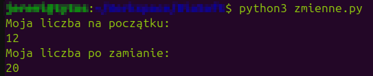

Czym są zmienne?
Zanim zaczniesz pisać skomplikowane programy, istnieje kilka podstawowych konceptów w programowaniu, które musisz zrozumieć i nauczyć się z nimi pracować.Pierwszym z nich są zmienne.
Od tego momentu zakładam już, że masz przygotowane i umiesz obsługiwać narzędzia niezbędne do pisania kodu. W przeciwnym razie, zajrzyj do poprzedniej lekcji: Przygotowanie do kursu
Spis treści
Wstęp
Niemal każdy program musi przechowywać jakieś informacje.
Jeśli chcielibyśmy napisać program, który oblicza długość sekwencji DNA, to rzecz jasna nasz program musi najpierw znać tę sekwencję.
Jako użytkownik komputera możesz być przyzwyczajony/a do przechowywania danych w plikach.
Pracy z plikami (programistycznej) nauczysz się później, ale musisz wiedzieć, że z punktu widzenia programu, odczytywanie i zapisywanie informacji w plikach jest czasochłonne.
Okazuje się, że w plikach "opłaca się" przechowywać tylko większe ilości danych, natomiast kiedy chcemy szybko zapamiętać jakąś krótką informację, zamiast tego lepiej jest skorzystać z szybszego rozwiązania.
Zmienne do tego właśnie służą. Są to, cytując mojego kolegę Kacpra, "pudełka na dane".
Poza prędkością "zapamiętywania", zmienne różnią się od plików jeszcze jedną rzeczą - są tymczasowe.
Jeśli zapiszemy sobie jakąś notatkę w pliku, to możemy wyłączyć komputer, pójść na obiad i kiedy znowu go uruchomimy jakieś pół godziny później, nasza notatka wciąż tam będzie.
Natomiast zmienne znikają bezpowrotnie w momencie, kiedy nasz program przestaje działać.
Więc jeśli musicie sobie zanotować, żeby pamiętać o urodzinach babci, lepiej skorzystajcie z kalendarza...
Używanie zmiennych
Aby odróżnić jedną zmienną od drugiej, musimy nadać im unikalne nazwy.
Właściwie, nie różni się to wcale od opisywania pudełek ze starymi gratami, które porzucamy w garażu...
my_number = 12
Użyłem właśnie operatora przypisania (=), aby przypisać zmiennej o nazwie 'my_number' liczbę 12 - a więc
"wrzuciłem" liczbę 12 do pudełka i opisałem je 'my_number'.
Uwaga: przy nazywaniu zmiennych musimy trzymać się pewnych zasad.
W nazwie zmiennej mogą znajdować się tylko litery, podkreślniki oraz cyfry - z zastrzeżeniem, że pierwszy znak nazwy nie może być cyfrą.
Tak więc np. spacje odpadają.
print() pozwala nam na wypisanie tekstu do konsoli.Spróbujmy teraz użyć go, aby zajrzeć do naszego pudełka.
my_number = 12
print(my_number)
Uwaga: w przeciwieństwie do wypisywania tekstu, kiedy chcemy wypisać zawartość zmiennej,
nie umieszczamy jej nazwy w cudzysłowie.
Dlaczego tak jest, dowiesz się w następnej lekcji.
Jeśli chcemy zapamiętać więcej liczb, musimy im nadać inne nazwy:
my_number = 12
my_number2 = 8
Co prawda da się wrzucić dwie liczby do jednego pudełka, ale o tym później - na razie lepiej ich nie mieszajmy.
Bez obaw, pudełek nam nie zabraknie.
Nasz komputer nie chce ryzykować, że się pomyli, tak więc w programowaniu nie jest to możliwe.
Jeśli koniecznie chcemy wrzucić coś do pudełka o jakiejś nazwie, to musimy najpierw wyrzucić z niego wszystko, co już się w nim znajduje.
my_number = 12
print("Moja liczba na początku:")
print(my_number)
my_number = 20
print("Moja liczba po zamianie:")
print(my_number)
A co z tym wyrzucaniem? Jak widzisz, nie użyłem w tym celu żadnego specjalnego polecenia. Po prostu wrzuciłem do "pudełka" inną wartość - Python sam
wyrzucił tę poprzednią.Jeśli wykonasz powyższy kod, przekonasz się, że po przypisaniu do zmiennej 'my_number' liczby 20, zniknęła z niej liczba 12, którą wcześniej tam trzymaliśmy.
Takiej wyrzuconej zawartości zmiennej nie da się już odzyskać - bądź ostrożny/a

A co jeśli nie potrzebujesz już ani liczby ani pudełka?
Możesz je wtedy wyrzucić za pomocą polecenia
del - zauważ, że w tym wypadku nie używamy nawiasów.
my_number = 12
print(my_number)
del my_number
I to tyle jeśli chodzi o zmienne.
A wracając do notatek... - Komentarze
Wiesz już o co chodzi w zmiennych, ale zanim przejdziesz do następnej lekcji, chciałem pokazać ci coś jeszcze.
Mówiłem, jak to zmienne nie nadają się do przechowywania notatek.
Ale podczas pisania kodu notatki są ważne.
No bo przecież, jeśli porzucimy teraz nasz program i wrócimy do niego za miesiąc, (tak, to się zdarza) to nie będziemy pamiętać, co ta nasza liczba w ogóle oznaczała.
Do zostawiania notatek w kodzie służą komentarze.
Nie wiem, czy już próbowałeś/aś, ale jeśli by tak napisać byle co gdzieś w programie i spróbować go uruchomić, to interpreter zapewne radośnie zapełni twój ekran komunikatami o błędach.
Jest jednak sposób, żeby Python zupełnie zignorował linijkę takiego nie-kodu - trzeba oznaczyć ją znakiem '#'.
# Liczba pudełek po butach w moim garażu
my_number = 12
print(my_number)
Pierwsza linijka w powyższym kodzie to właśnie komentarz.Kiedy Python "widzi" znak #, to wie, że reszta linijki jest komentarzem i w ogóle tam nie zagląda.
Możliwe jest też napisanie komentarza, który obejmuje więcej niż jedną linijkę. Trzeba tylko otoczyć go trzema znakami cudzysłowu lub apostrofu z każdej strony:
# Liczba pudełek po butach w moim garażu
my_number = 12
print(my_number)
'''
Znalazłem jeszcze kilka pudełek,
na strychu i w piwnicy,
a nawet jedno pod łóżkiem.
'''
my_number = 20
print(my_number)
Właściwie, to tak naprawdę nie jest komentarz, tylko wielolinijkowy string. Ale o tym w następnej lekcji...
Jesteś teraz gotowy/a aby przejść do lekcji numer 3: Typy danych I
Do spisu treści
Jeremi Maciejewski